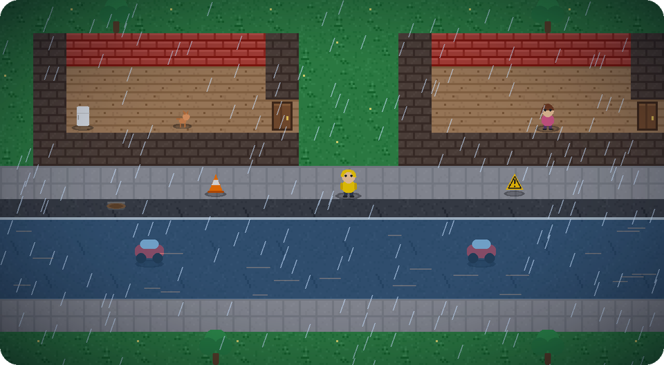
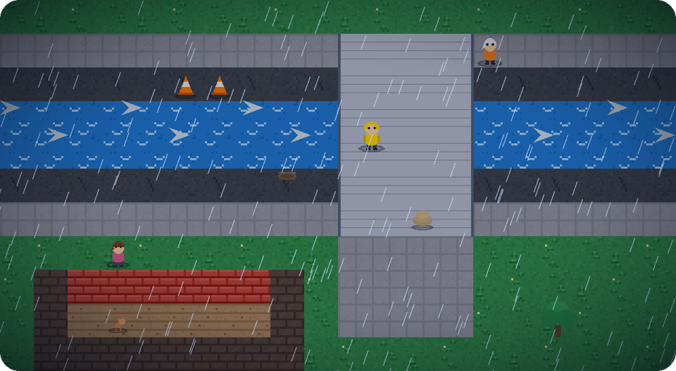
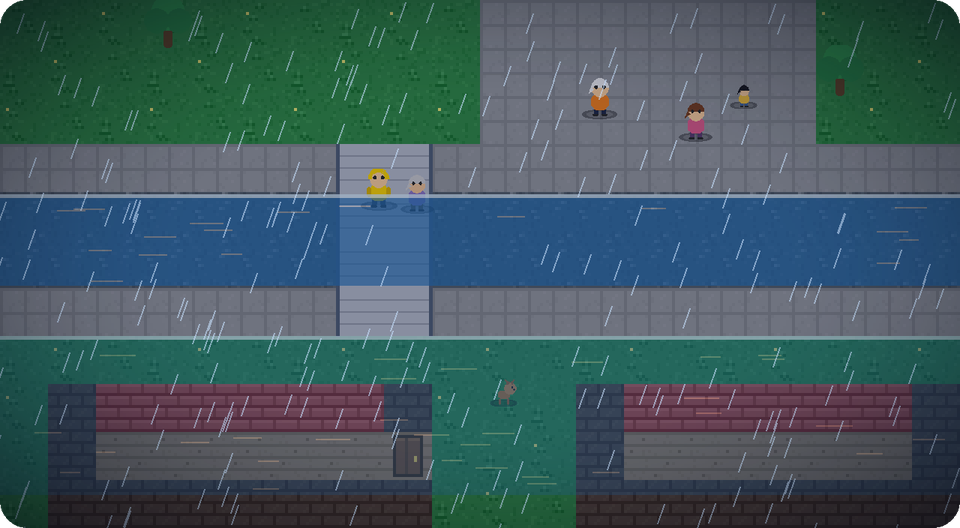
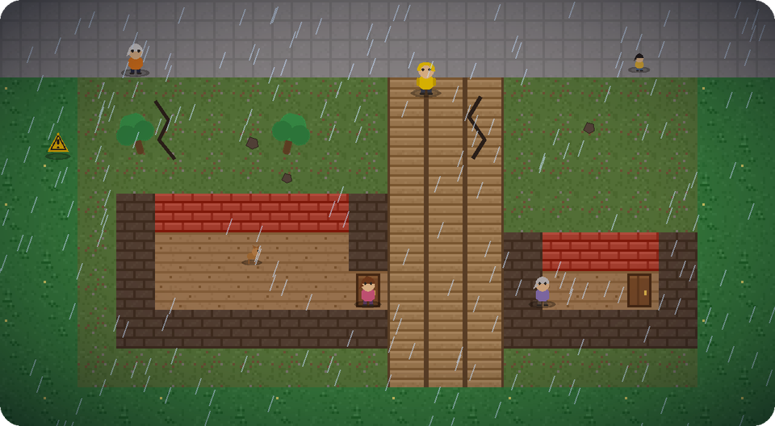
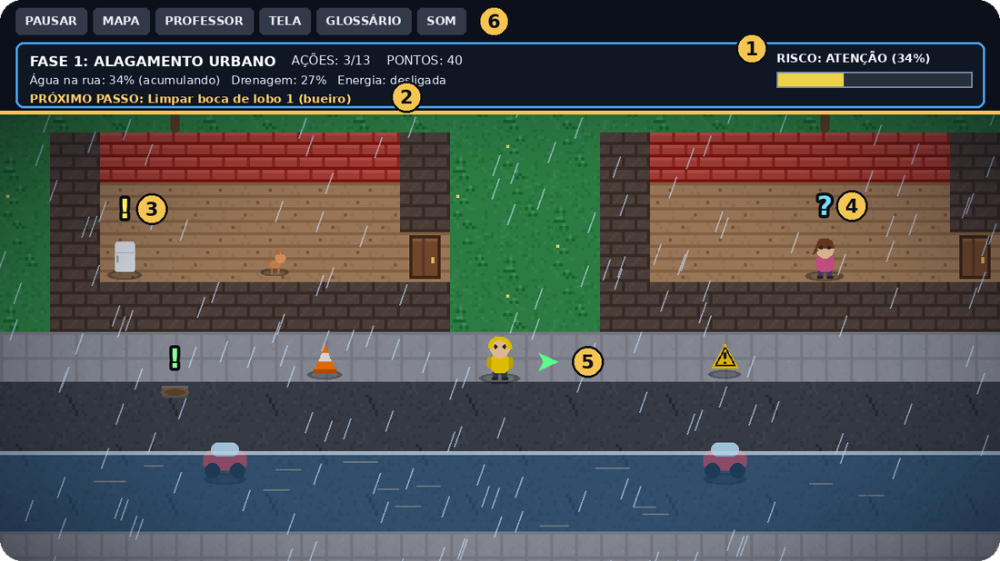

Alagamento
Água acumulada na rua porque a chuva é forte e a drenagem entope ou não dá conta.
Você aprende: a desligar a energia, limpar bocas de lobo (bueiros) e evitar os perigos escondidos na água.
HIDRO é um jogo em pixel-art para aprender, na prática, a diferença entre alagamento, enxurrada, enchente e deslizamento e o que fazer para se proteger. Feito para a escola: com plano de aula, atividades, inclusão e avaliação.

Muita gente usa "enchente", "enxurrada" e "alagamento" como se fossem a mesma coisa. Não são, e cada uma pede uma atitude diferente. No HIDRO você aprende a diferença vivendo cada uma.

Água acumulada na rua porque a chuva é forte e a drenagem entope ou não dá conta.
Você aprende: a desligar a energia, limpar bocas de lobo (bueiros) e evitar os perigos escondidos na água.

Água rápida e forte que desce a ladeira e arrasta o que encontra.
Você aprende: a usar a passarela, isolar a via e nunca mexer em bueiros durante a correnteza.

O rio sobe devagar e transborda sobre a planície onde as pessoas vivem.
Você aprende: a ouvir os alertas, preparar a mochila de emergência e sair cedo.

O solo encharcado perde a força e a encosta pode escorregar.
Você aprende: a reconhecer os sinais, evacuar sem voltar e usar a trilha segura.

Materiais pensados para a escola pública: baixo custo, com opções para poucos aparelhos e sem computador.
Duas aulas de 50 minutos, com habilidades da BNCC, sequência e avaliação.
Onze atividades para aplicar: maquetes, mapa de riscos, debate, campanha e mais.
Estudantes autistas e com altas habilidades ou superdotação.
Instrumentos para avaliar a aprendizagem e a metodologia do jogo.
Documentos, slides, cartões para imprimir e kit de divulgação.
Uma oficina para agentes de proteção e defesa civil e pesquisadores, preparada para o Seminário RRD 2026: conhecer o jogo, ver como usá-lo nas escolas e participar da sua avaliação. E uma oficina de duas aulas para estudantes do 6º ao 9º ano.
Abra o jogo no navegador do computador, do tablet ou do celular. Nenhuma instalação é necessária.